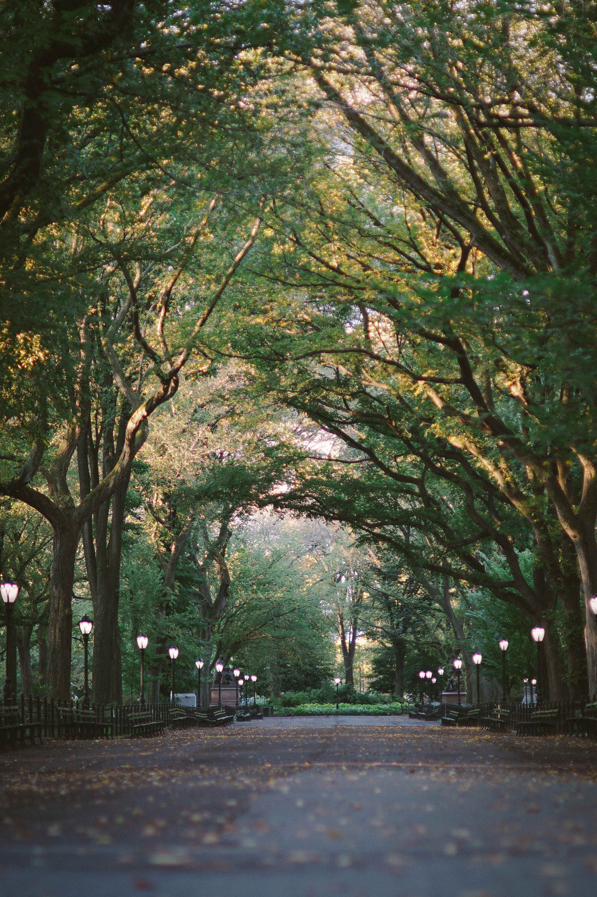
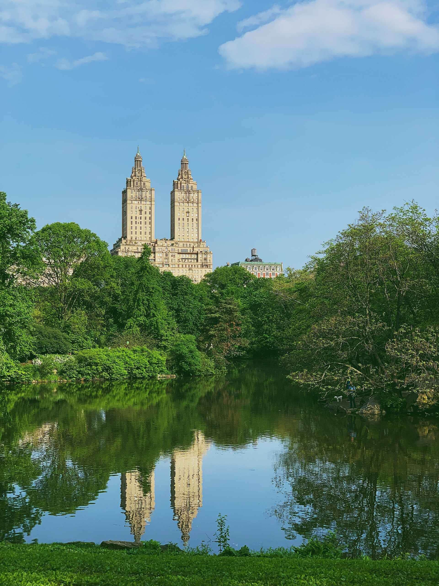

Urban GreenSpace
Urban GreenSpace adalah area alami dan terbuka yang ada di lingkungan perkotaan
Area terbuka yang ditumbuhi oleh berbagai jenis vegetasi, termasuk taman, lapangan, hutan kota, jalur hijau, dan area alami lainnya demi menyediakan area yang hijau dan alami di tengah-tengah lingkungan perkotaan yang padat dan sering kali terurbanisasi
Manfaat terhadap lingkungan
Udara di area perkotaan akan menjadi lebih bersih oleh peningkatan kualitas oksigen, dan menghasilkan lingkungan yang sehat
Menciptakan lingkungan bermanfaat bagi masyarakat karena area nya yang terbuka dan eco-friendly ditengah lingkungan kota yang padat




Manfaat Urban GreenSpace terhadap kehidupan sosial
Area terbuka yang hijau dan interaksi dengan alam dapat meredakan stres yang seringkali dialami penduduk perkotaan akibat kehidupan yang padat
Menjadi tempat yang membantu memperkuat ikatan sosial bagi warga kota. sehingga meningkatkan rasa kebersamaan dalam masyarakat
Masyarakat akan lebih tertarik untuk tinggal di lingkungan sekitar ruangan terbuka mengakibatkan peningkatan nilai properti di sekitarnya
Vegetasi di Urban GreenSpace membantu menyerap air hujan dan mengurangi risiko banjir, erosi tanah serta bencana alam lainya di daerah perkotaan.
Jurnal Terkait Urban GreenSpace:
The multifunctional use of urban greenspace (Leeuwen E., et al ., 2011)
Informal urban greenspace: A typology and trilingual systematic review of its role for urban residents and trends in the literature (Rupprecht C. & Byrne J., 2014)